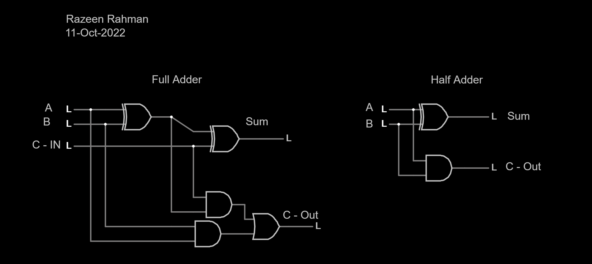

Name: Razeen Rahman
Date: 11-Oct-2022
I received assistance from: No One
I assisted: No One
The C out truth table produces the output column for the number you would carry in binary addition.
The S truth table produces the output column for the number that represents the sum of the binary addition.
The C in digit is 0 while the C in digit for the last 4 rows is 1.
This is true because the table counts up in standard order of binary.
This is because in the least significant bit position, there is no carry present which must be added. The carry is only present later in the chain of adders.
S would not be available instantly because all things in the real world have some sort of delay whether it be a very short amount of time. This can be proved by the fact that it takes a couple of seconds for light (the fastes thing in the universe) to travel between the Earth and the Moon.
We can infer the two numbers (A and B) have been added together many times, leading to a greater number each time they are added. This state is called exponential growth.
Half Adder and Full Adder constructed out of AND, OR, NOT, XOR, NAND, and NOR gates. (Click image to be redircted to the Falstad page)
I learned how to construct and interpret binary adders.
I encountered a challenge during section 3.3 as I did know understand what it mean by the state it is commonly called. The Falstad excercise was also quite challenging as I did not really know where and how to start at the beginning.
I think the experience could be improved by adding some more examples and practice in preperation for the Falstad excercise.
I now realize that binary adders are a crucial component performed by computers, so it is important I fully understand it for future success in technology fields.